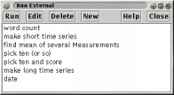
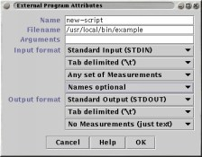
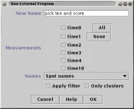

An interface to other programs or scripts; `Run External' sends some or all of the data to another program, and then attempts to parse the results produced by that program.
`Run External' can export one or more Measurements, either to the standard input of a program, or to a temporary file which the external program can be told about via a command-line flag.
The output of the program that has been invoked can be grabbed from the program's standard output, or loaded from a temporary file which the program has produced.
|  | Part One: The main control panel of `Run External' displays a list of the programs which have already been defined and provides the following controls: |
|
Run the selected program Edit the definition of the selected program Delete the definition of the selected program New create a new program definition |
|  | Part Two: This panel is displayed when you are creating a new external program definition, or editing an existing one. |
|
Name is the name that will be used in the program list (it does not have to correspond to the actual name of the executable file) Filename specifies the full path and name of the program that you wish to be invoked Arguments should contain any command-line parameters you want to be passed to the program as it is run. Special variables representing temporary file names can be used in this field, see below. Input format comprises four down-down menu selections with which you describe what sort of data the external program is able to accept, and how the communication will occur.
Output format contains three down-down menu selections for describing the output format of the external program, and how the output communication will occur.
|
|  | Part Three: |
Consider a hypothetical script called "mean" which accepts data in tab separated column form, like this: form:
21431.31 43.21 54352.42 325432.1 213.2143 3232.5 43242.5 3231.23 5121.23 4123.2 54325.12 34.451
and calculates the mean value on each line, producing an output file like this:
67531.9 41894.256 42783.435
The main thing to notice about this behaviour is that the same number of lines are output as were input, and that no symbolic names are present, only numbers. Any program which behaves like this can be described using the options presented in this example. A more complex example, in which the number of output lines is not the same as then number of input lines is described below.
To interface to this script, the output format selections
should be
In the case where the script can operate using standard input and output stream, then no additional description information is required.
If the script does not understand standard input or output, then a
temporary file can be used for either input or output (or
both). Imagine that the "mean" script is normally operated from the
command-line like this:
host% ./mean -in my_data.txt -out result.txt
`Run External' can save the input data in a temporary file, called
for example 'temp1', and then execute the command:
host% ./mean -in temp1 -out temp2and, once the "mean" script has completed, read the output data from the file 'temp2'.
To do this, select 'Temporary file' in both the output format and input format selections and set the Arguments text-field to
-in %IN -out %OUTThe symbols '%IN' and '%OUT' will be replaced by the temporary filenames that `Run External' generates when you invoke this program. You can see these filenames (and change them) in the dialog box that appears before a program runs (see Part Three above).
(more documentation to follow...)